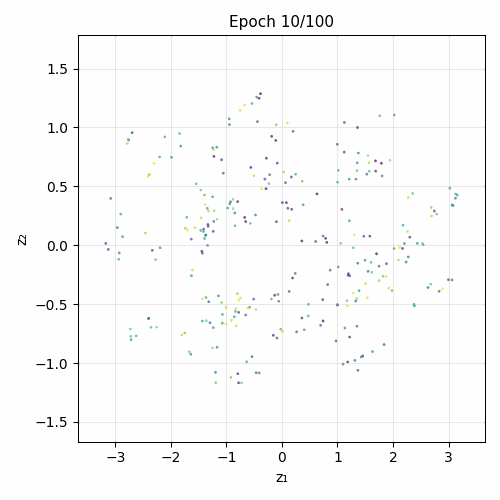

What this is
A from-scratch reproduction of the Latent Space Roadmap (LSR-v2) paper, extended with CLIP language conditioning. Given a start image and a goal image of a manipulation scene, the system plans a sequence of intermediate images and predicts the robot actions between them.
Adding CLIP text embeddings to the encoder turns it into a primitive vision-language-action system: image + language → latent plan → action sequence.
Training evolution

Architecture
1. Mapping Module (VAE)
ConvEncoder → latent z (dim 4) → ConvDecoder. Trained with ELBO (recon + β·KL).
2. Latent Space Roadmap (LSR)
k-NN graph over encoded training frames, edges filtered to training transitions. At inference: Dijkstra from z_start to z_goal → visual plan.
3. Action Proposal Module (APM)
MLP: [z_i, z_{i+1}] → action. Trained on (z_t, z_{t+1}, a_t) triplets.
4. CLIP extension
Frozen CLIP text embedding (512-d) projected to 64-d and concatenated with CNN features before the bottleneck.
ConvEncoder → latent z (dim 4) → ConvDecoder. Trained with ELBO (recon + β·KL).
2. Latent Space Roadmap (LSR)
k-NN graph over encoded training frames, edges filtered to training transitions. At inference: Dijkstra from z_start to z_goal → visual plan.
3. Action Proposal Module (APM)
MLP: [z_i, z_{i+1}] → action. Trained on (z_t, z_{t+1}, a_t) triplets.
4. CLIP extension
Frozen CLIP text embedding (512-d) projected to 64-d and concatenated with CNN features before the bottleneck.
Results
| Model | Planning success | k-NN task accuracy | Dataset |
|---|---|---|---|
| Baseline VAE | 30.8% | 54.2% | Box stacking (normal) |
| CLIP-VAE | — | 54.5% | Box stacking (normal) |
k-NN accuracy: 5-class node-degree classification. Planning success: val set, τ=0.05 MSE.
CLIP-VAE planning evaluation pending. See results/comparison.json.